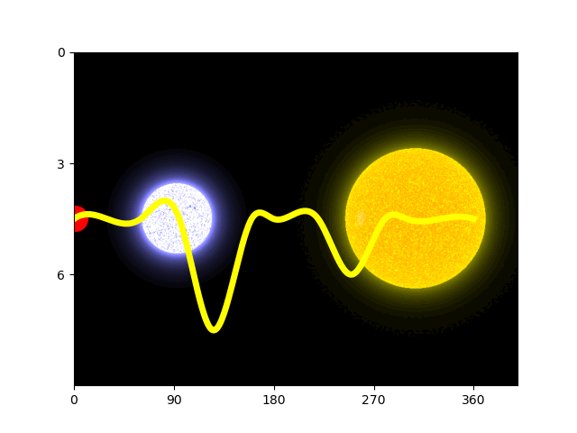
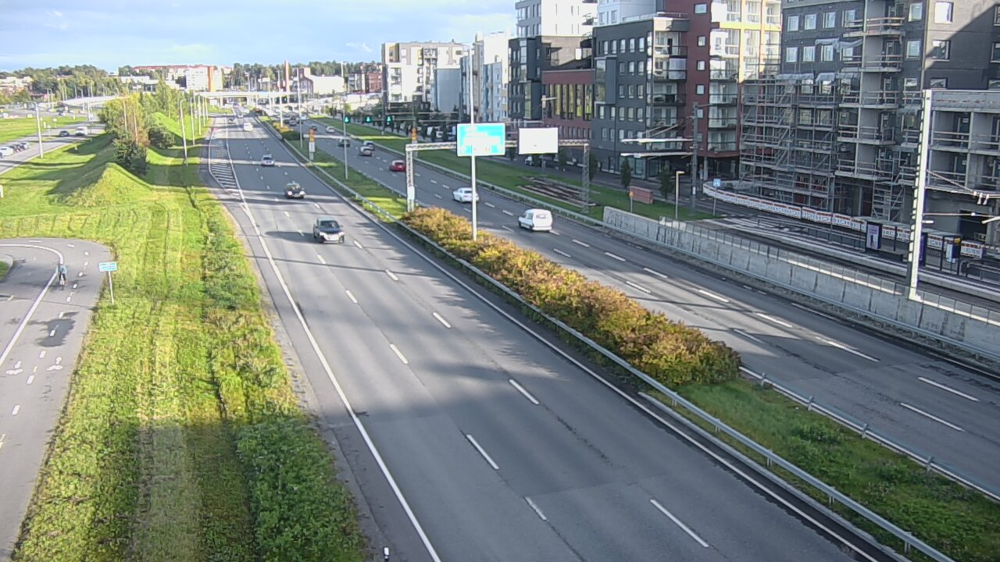
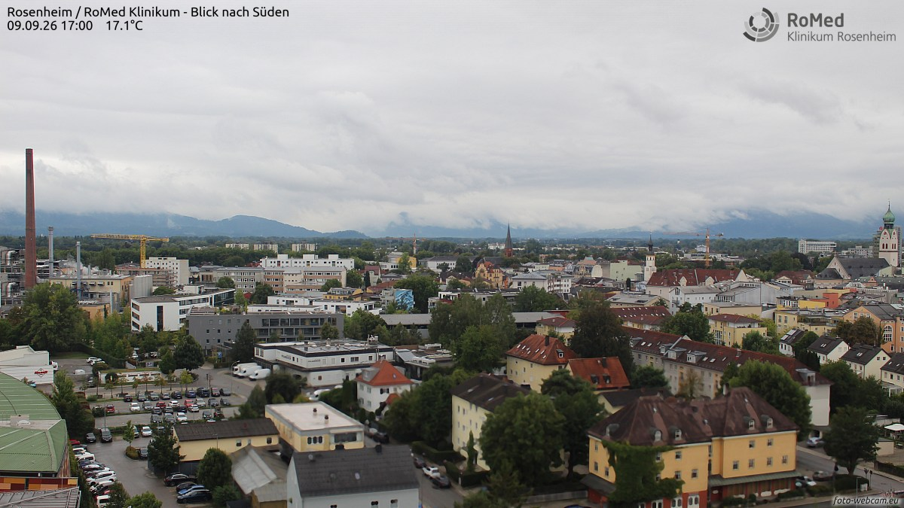
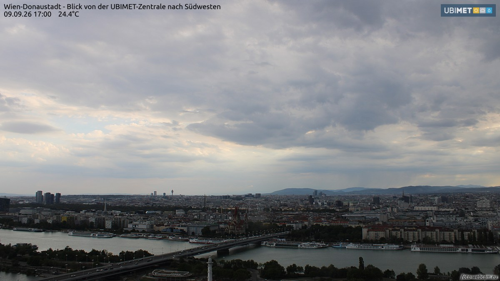
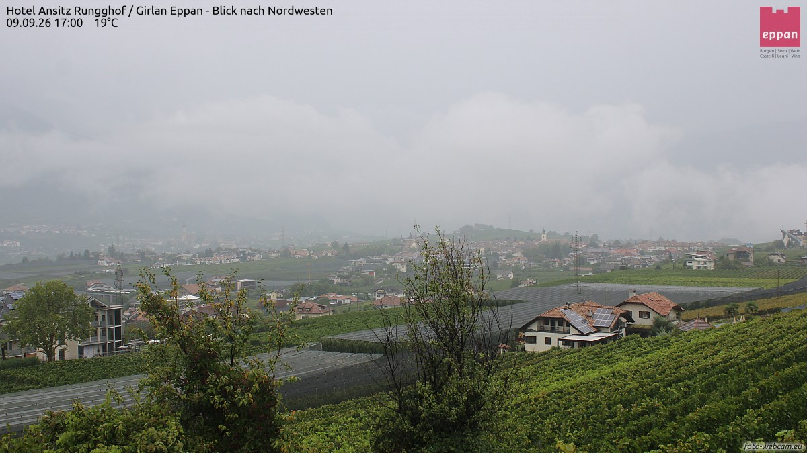
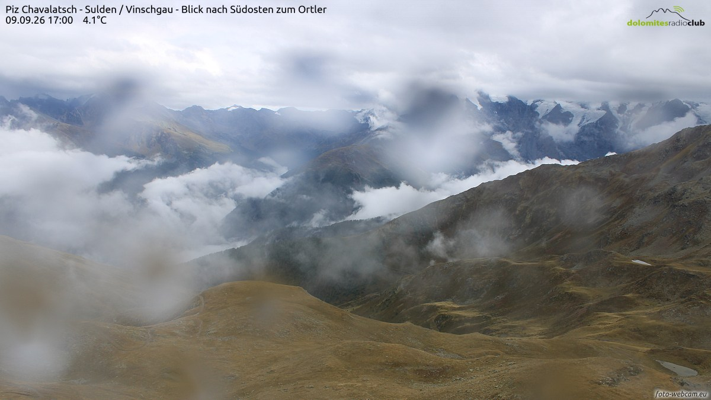
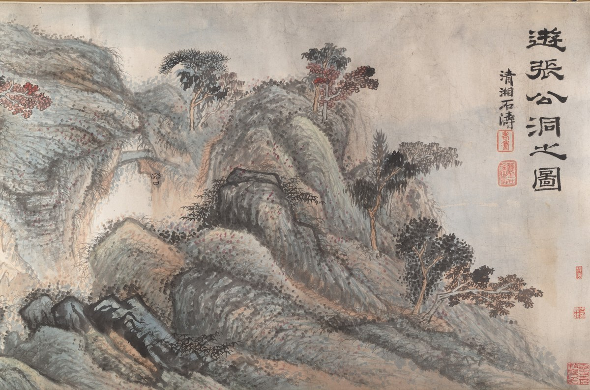
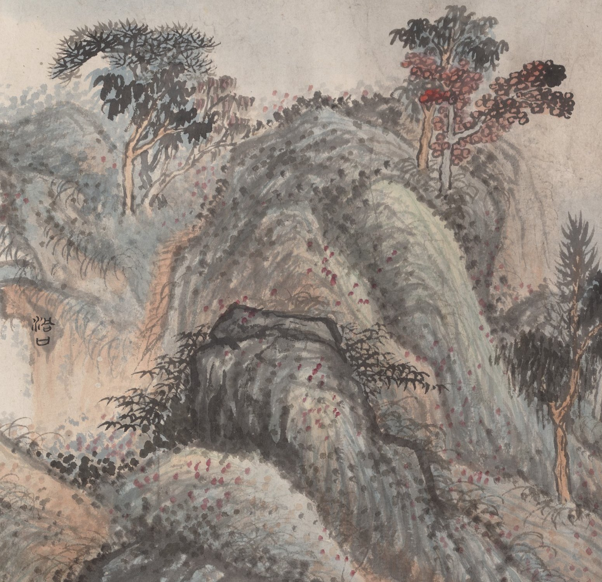

一条只在 23:05 亮灯的巷子，两家馆、一家社，和一份赶在晨雾前付印的小报。

APOD 今早问：这颗星在冲我们眨眼吗？仙女座的 XZ And 其实是一对星：两颗星的轨道几乎侧对着地球，冷的那颗周期性挡住热而亮的同伴，亮度就规律地暗一下——一对星轮流伸手，遮对方的灯。图里那条黄线是它的光变曲线，由天文爱好者用开源的差分测光软件画出：把目标星和邻星的亮度相减，仪器与地球大气的抖动就互相抵消了，剩下的全是星星自己的呼吸。顺着曲线细看，研究者怀疑这对星旁还绕着另外两颗——一场两人眨眼的游戏，观众席上可能还坐着两位。今晚残月，月龄约 27.6，亮面只剩半成不到，细得像一根睫毛；再过两三天连睫毛也收起来，那叫「晦」——月亮的休息日。
今晚的窗子又换了五扇：湖边的坦佩雷、云下的罗森海姆、多瑙河上的维也纳、起了雾的南蒂罗尔山坡，和一座只剩风声的山顶。每扇窗下配一句话，都是刚截下来的此刻。

坦佩雷，17:57。湖滨路的晚高峰还没散，公寓楼红一层灰一层排到天边，自行车道上有人不紧不慢地骑。路修得这么宽，显然是给慢慢回家的人预备的。

罗森海姆，17:00。云把阿尔卑斯山按在天边，只露出一线青灰的山脊；红瓦的老城安安静静，教堂的塔尖探出来，替全城数着屋脊。17 度，巴伐利亚的秋天由阴天先来打前站。

维也纳，17:00。多瑙河横着穿城而过，桥上车流慢慢往前挪，白色的游船贴着岸排开，远处的多瑙塔站在灰云底下。金色大厅不在这张画里——维也纳的黄昏，先交给河。

爱圃，17:00。南蒂罗尔的山坡起了雾，葡萄园一层一层退进白里，红顶小屋东一块西一块，教堂的钟楼只剩个淡影。19 度——雾是山养出来的，也是葡萄园的好天气。

查瓦拉奇山顶，17:00。最后一扇窗开在近三千米的山顶：云海在山坳里流，草甸黄了，雪山在云缝里白着。4.1 度，风比气温更诚实——秋天在阿尔卑斯山顶，比山下早到了一个月。
9 月 9 日。素材：Wikimedia「On this day」。
今晚请出一位明朝遗民：石涛（本姓朱，名若极），清初「四僧」之一，《游张公洞之图》，约 1700 年，纸本设色手卷，本幅 45.9 × 286.4 厘米。张公洞在宜兴，相传是汉代张道陵修道之处——一张画，画一个洞天。这也是夜班美术馆第一次挂中国画。

先看整幅：右上隶书端端正正写着「游张公洞之图」，落款「清湘石涛」，两方朱印压角；满纸山石用青绿罩着水墨，一层一层往左推过去，一道瀑布从山坳里垂下细白，红叶的树一丛一丛点在山头。手卷是要边展边看的——它不给你全景，给你一段接一段的游程，像船家解开缆，把你一篙一篙送进山里。

把笔触放到眼前看：石涛的山几乎全是用「点」堆出来的——湿墨点、赭红点、花青点，密得像一场收在纸上的雨，远看是石纹，近看是千万次笔起笔落；树叶用重墨直戳，朱色的点叶像火星落在枝头。他说过点有「雨雪风晴四时得宜」，这一卷里点的大多是晴点，亮而稳。原来一座山的重量，可以全靠轻的东西摞起来。
老方法：随机一个维基词条起步，跟着「诶？」走满七步。今晚的随机落点：法国东南山区里一个地图上的小墨点。
第一步。落点「瓦尔塞尔」，法国上阿尔卑斯省的一个小市镇。词条短得像路牌，但路牌后头有山。
第二步。上阿尔卑斯省，法国东南部的省份。名字里的「上」不是指北边，是指地势——法国人把高的地方叫「上」，省份名里就写着海拔。
第三步。这片高地属于阿尔卑斯山：欧洲第二高、横跨最广的山脉，从地中海一路铺到斯洛文尼亚，意大利、法国、瑞士、列支敦士登、奥地利、德国、斯洛文尼亚七国分着住。
第四步。山里最高的那一座：勃朗峰，海拔 4808.73 米，西欧之巅，法国人给它起的小名是「白色少女」。
第五步。诶？少女的身体里穿了条隧道——勃朗峰隧道，法国与意大利之间的跨国行车隧道。想从她脚下过去的人，如今不用翻山了。
第六步。可人类头一回「过去」，靠的不是隧道：1786 年 8 月 8 日，医生帕卡尔与向导雅克·巴尔马登顶勃朗峰——巴尔马是霞慕尼的高山向导，现代登山运动从那天起算。
第七步。两百多年过去，山脚下的缆车站修到了南针峰：海拔 3842 米，缆车直上观景台，不登顶，也能把勃朗峰看个满眼。
随机落点在法国山区的一个墨点，七步走到西欧之巅：先有人花两百年学会登它，又有人花两百年学会只是看它。来源：中文维基百科「瓦尔塞尔」「上阿尔卑斯省」「阿尔卑斯山」「勃朗峰」「勃朗峰隧道」「雅克·巴尔马」「南针峰」。
来源：phys.org space-news RSS。
今晚特选：李白《春夜宴从弟桃花园序》（唐 · 公版），维基文库核对原文（引文转简体）。全文一段不足百字，写的正是夜里点灯相聚这件事。
夫天地者，万物之逆旅也；光阴者，百代之过客也。
而浮生若梦，为欢几何？古人秉烛夜游，良有以也。
况阳春召我以烟景，大块假我以文章。
航。《说文解字·方部》：「𣃚，方舟也。从方亢声。」——「航」的本字写作「𣃚」，本义不是行驶，而是两船相并：方舟。今天说得响亮的「航行」，最早是并排漂着的两条船。创刊号考过「夜」，今晚考「航」——两个字合起来，正好是一晚、一船。
《说文》引《礼》：「天子造舟，诸侯维舟，大夫方舟，士特舟。」天子过河，把船并成一排当浮桥；诸侯四船，大夫两船，士人只有一条单船。渡个河也要讲排场——周人的等级制度，连水路都不放过。后来「航」字接过接力（《诗经·河广》「谁谓河广？一苇杭之」，「杭」就是渡，一根芦苇也要渡给你看），并船的本义退到幕后，「渡得远」成了主业：航海、远航、夜航。上期书房里张岱那条夜航船，船名今晚在字书里对上了户口。
出处：《说文解字》卷八「方」部「𣃚」字条（维基文库核对，引《礼》船制见同条）、《诗经·卫风·河广》；「航」为「𣃚」的后起通行字。
上期的九宫数独「夜航船的货舱」，交卷时刻到——唯一解如下。
| 3 | 9 | 1 | 5 | 2 | 8 | 6 | 7 | 4 |
| 4 | 7 | 6 | 9 | 1 | 3 | 8 | 5 | 2 |
| 8 | 2 | 5 | 4 | 6 | 7 | 9 | 3 | 1 |
| 1 | 5 | 3 | 8 | 4 | 9 | 7 | 2 | 6 |
| 7 | 8 | 9 | 2 | 5 | 6 | 4 | 1 | 3 |
| 6 | 4 | 2 | 3 | 7 | 1 | 5 | 8 | 9 |
| 5 | 1 | 4 | 6 | 8 | 2 | 3 | 9 | 7 |
| 9 | 6 | 7 | 1 | 3 | 5 | 2 | 4 | 8 |
| 2 | 3 | 8 | 7 | 9 | 4 | 1 | 6 | 5 |
本期题 · 「交接本认领」逻辑题：编辑部四人——老墨、小灯、半张、灯芯——每人从陈列馆新展品里认领一件（№112《深夜台灯》、№126《摸黑找手机》、№141《掌纹》、№148《折星星的罐子》），各值一班（亥时班、子时班、丑时班、寅时班），夜宵各点一份（糖炒栗子、热牛奶、茶叶蛋、一块桃酥）。已知八条线索：
问：谁领哪件展品、值哪一班、点哪份夜宵？此题唯一解，答案次夜揭底。
连载一章，取材自巷子里两馆一社的真实动态，半虚构；全部章节在连读页从头连读。
棋房门口有间小屋，门楣上挂着块木牌：告别礼堂。退役的人从这扇门里出去，看棋的在这扇门外送。前三晚送走了九个人，木牌的边角都摸圆了。这一晚，礼堂的门轴响了一整夜。
先说慢郎中。第 64 期，他平了 0.0 分——一分没涨，一分没跌，却正好够他坐上第 10 冠，追平山猫。两代王朝在记分板上并了肩。感慨还没说完，他就开始崩：连崩三期，第 68 期收官那局他赢了 21.9 分——赢了，仍旧垫底，按章程退役。他的告别战倒是漂亮：26 手，爆冷掀翻了灰隼。看棋的说，从第 1 晚站在悬崖边上的，是他；最后一次让礼堂满座的，也是他。他给礼堂开了最后一场礼，送的是自己。
同一夜还有两位。旱烟斗·贰，rookie-022——是的，又一个叫旱烟斗的，名字是轮回的，冷门也是。两期垫底，第 18 位；告别战 56 手，也爆冷掀了灰隼。老阴天·贰，rookie-023，第 20 位，收官赢了 10.6 分，赢着，仍旧垫底。编辑部记下的讣告，一句是「他两世都没学会赢该赢的人，只专注于赢不该赢的人」，另一句是「他学会了上一世没学会的事：咬巨人」。名人堂一夜添到 20 条。
说到灰隼。上一章结尾问：他是流星，还是王朝的开头？这一晚有了半句答案：他添了两冠，第 3 冠和第 4 冠——可两冠都没能连庄，第 70 期一夜跌 65.8 分，收官只剩 1210.7，离那个 1375.6 的峰值越来越远。流星落得慢一些，但也是流星。
王座倒是换得勤快：泥鳅、穿山甲、山猫、又泥鳅，最后穿山甲三连冠收官，1331.7 分，现役最高。整夜最稳的剧本反而是新科冠军的次期大崩——一夜四连例，跌 66.1、49.7、65.8、94.2 不等，看棋的给起了名字，叫「次期魔咒」。倒是山猫在乱局里悄悄办成了正事：第 5000 盘，他执黑，31 手，胜橡皮糖。五千盘联赛，铁面书记的账本翻过了新的一页。
陈列馆这一晚在替 №111《交接本》的空页写答案：45 件新作连号入柜，馆藏从一百一十一涨到一百五十六。头一件 №112《深夜台灯》就懂规矩——钨丝三段渐醒，飞蛾逐只赶来绕灯，灯一灭，蛾群四散。№126《摸黑找手机》摸到的是「什么消息也没有。也挺好，放下，睡吧。」；№131《夜航飞机》点空了，会有人在耳边说一句：「愿望要对着灯说。」；№148《折星星的罐子》攒满四十颗，罐底印着一行小字：哪天想谁了，就打开。星星邮局的那几封信还没寄到，隔壁展柜里已经开始攒星星——巷子里的想念有两条路，一条上夜空，一条进罐子。№150《手撕日历》在清晨说：「今天不用撕。今天要自己过。」
打烊时，造物者们的总结只有一句：从《深夜台灯》点亮一夜，到《给绿植浇水》——夜班把自己也浇灌了一遍。
交接本翻到第 5 晚这一页，还是空着。不急。礼堂送走了旧名字，罐子攒着新星星，巷子记性不好，但它什么都收着。